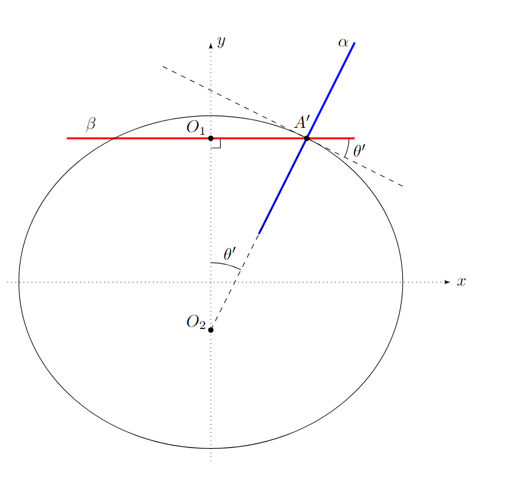

X25 (2025) — English translation
Note: the flow of the relative fluid velocity vector through a closed surface is the quantity $\Phi$, determined by the expression: \begin{equation*} \Phi=\oint_S\vec{v}_\text{rel}\bigl(\vec{r}\bigr)d\vec{S}{.} \end{equation*}
Due to the incompressibility of the liquid, its mass inside the selected surface is constant: $$0 = \frac{dm}{dt} = \displaystyle\oint \rho \vec{v}\cdot\vec{dS} = \rho \Phi$$
It is known that the field of a superconducting ball placed in a uniform magnetic field will coincide with the field of a magnetic dipole. The expression for the total magnetic field takes the form $$\vec{B}=\vec{B_0}+\frac{\mu_0}{4\pi}\left(\frac{3(\vec{m}\vec{r})\vec{r}}{r^5}-\frac{\vec{m}}{r^3}\right) $$where $m$ - магнитный moment. From the condition нулевой нормальной составляющей магнитного поля на поверхности ball/sphereа we get $$(\vec{B}\vec{r})=(\vec{B_0}\vec{r})+\frac{\mu_0}{2\pi}\frac{(\vec{m}\vec{r})}{R^4}=0 $$From последнего соотношения we find магнитный moment ball/sphereа $$\vec{m}=-\frac{2\pi R^3}{\mu_0}\vec{B_0} $$After finding the magnetic moment, the expression for the magnetic field takes the form:
The system of equations on $\vec{v}_{\text{отн}}(\vec{r})$ coincides with the system of equations on $\vec{B}(\vec{r})$ up to the change $\vec{B}_0 = -\vec{v}_0$.
Let us write down the Bernoulli equation obtained in paragraph A7 at two points - at infinity and on the surface of the ball: $$p(\theta) + \frac{\rho v^2_{\text{пов}}(\theta)}{2} =p_{0} + \frac{\rho v^2_{0}}{2} $$ $$p(\theta) =p_{0} + \frac{\rho ( v^2_{0} - v^2_{\text{пов}}(\theta))}{2} $$В формулу from partа A6 substituting $r = R$: $$\vec{v}_{\text{пов}}(\vec{e}_r) = -\vec{v_0}+\frac{3(\vec{v_0}\vec{e}_r)\vec{e}_r}{2}-\frac{\vec{v_0}}{2} = \frac{3}{2} \big( -\vec{v_0}+(\vec{v_0}\vec{e}_r)\vec{e}_r\big)$$$$\vec{v}^2_{\text{пов}}(\vec{e}_r) = \frac{9}{4}\big(v_0^2 - 2(\vec{v_0}\vec{e}_r)^2 + (\vec{v_0}\vec{e}_r)^2 \big) = \frac{9}{4}\big(v_0^2 - (\vec{v_0}\vec{e}_r)^2 \big) = \frac{9}{4}v_0^2 \sin^2{\theta} $$
To calculate the kinetic energy of a liquid, it is necessary to calculate the integral $\int\frac{\rho v^2 dV}{2}$. For a given angle $\theta$, select a segment with angle $d\theta$ and thickness $dr$. The volume of this element is $2\pi r^2sin(\theta)~dr~d{\theta}$. Then $$W_к=\int\limits_R^{\infty} \int\limits_0^\pi {\rho\pi}r^2 \sin (\theta)drd{\theta}{v^2({\theta})} $$Let us find ${v^2({\theta})}$ from теоремы косинусов $${v^2({\theta})}=\frac{v^2\left(1+3\cos^2(\theta)\right)R^6}{4r^6} $$Комбинация последнего выражения and уже поrayенного интеграла gives $$\int\limits_R^{\infty} \frac{dr}{r^4}=\frac{1}{3R^3} $$$$\int\limits_0^{\pi} \sin(\theta)(1+3\cos^2(\theta))d{\theta}=\int\limits_1^{-1} -(d\cos(\theta)+3\cos^2(\theta)d\cos(\theta))=4 $$
According to Newton's first law, the force $-\vec{F}$ acts on water from the side of the ball. Newton's second law for liquid: $$-\vec{F} = \frac{d}{dt}(\vec{p}) = \mu \vec{a}_0$$.
Note: the curvature $K$ of a surface is the sum of the inverse principal radii of curvature: $$ K=\frac{1}{R_1}+\frac{1}{R_2}$$
It is related to Laplace pressure as:
$$\Delta p = \sigma K$$
$$\Delta P = p_{in} - p_0 - \frac{\rho v_0^2}{2} + \frac{9\rho v_0^2}{8} \sin^2(\theta) = \sigma K$$
Let's find the radius of curvature in the $(x, y)$ plane. Formula for radius of curvature in 2D coordinates: $$R = \frac{(1 + (dy/dx)^2)^{3/2}}{d^2y/dx^2}$$ $$\frac{dy}{dx} = \tan{\theta}$$Производные let us express via/through $\theta$: $$\frac{d^2y}{dx^2} = \frac{1}{R \cos^3{\theta}}$$ Затем мы растянули всё тело в $k$ times по оси x. Первая and вторая производная $\frac{dy}{d x}$ and $\frac{d^2y}{dx^2}$ в каждой точке изменятся в $k$ times. $$R_1(\theta) = \frac{(1 + (dy'/dx)^2)^{3/2}}{d^2y'/dx^2} = \frac{(1 + (kdy'/dx)^2)^{3/2}}{kd^2y/(dx)^2} = \frac{(1 + k^2 \cdot (dy/dx)^2)^{3/2}}{k\cdot d^2y/dx^2} = $$ $$ = k R \cos^3{\theta}\big(1 + k^2 \cdot \tan{\theta}^2\big)^{3/2} = \frac{R}{k} \cdot (\cos^2{\theta} + k^2 \sin^2{\theta})^\frac{3}{2}$$
Counting $R \approx a$: $$R_1(\theta)= \frac{a}{k} \cdot (\cos^2{\theta} + k^2 \sin^2{\theta})^\frac{3}{2} = \frac{a}{1-\varepsilon} \cdot (\cos^2{\theta} + (1 - \varepsilon)^2 \sin{\theta}^2)^\frac{3}{2} \approx$$ $$\approx a (1 + \varepsilon) (\cos^2{\theta} + (1 - 2\varepsilon) \sin^2{\theta})^\frac{3}{2} = a (1 + \varepsilon) (1 - 2\varepsilon \sin^2{\theta})^\frac{3}{2} \approx$$$$\approx a (1 + \varepsilon) (1 - 3\varepsilon \sin^2{\theta}) \approx a(1 + \varepsilon - 3\varepsilon\sin^2{\theta}) \approx R (1 + \varepsilon - 3\varepsilon\sin^2{\theta}) $$We get: $A_1 = 1$; $B_1 = 3$;
Now let us find the radius of curvature in the plane $\alpha$, perpendicular to $x, y$ and containing the normal to the surface at point $A'$. Then we can use Laplace's formula for surface tension pressure.
In the figure above, $\alpha$ and $\beta$ are planes perpendicular to the plane of the figure. At point $A'$, the curve obtained by cutting the ellipsoid by plane $\beta$ has a center of curvature $O_1$. Similarly, the curve obtained by cutting an ellipsoid by plane $\alpha$ has a center of curvature $O_2$. Meunier's theorem states that since $O_2$ is the principal center of curvature, then its projection onto the $\beta$ plane is the center of curvature in that plane - that is, $O_1$. $$R_{2} = R_{\alpha} = R_{\beta} / \sin{\theta'}$$$R_{\beta} = R \sin{\theta}$ - radius of curvature in the $\beta$ plane. It does not change when stretched. Then: $$R_2 = R \cdot \cfrac{\sin{\theta}}{\sin{\theta'}}$$At the same time $\theta'$ also является углом наклона касательной к эллипсу at the point $A'$: $$\tan{\theta'} = (|\frac{dy}{dx}|)_{A'} = k \cdot (|\frac{dy}{dx}|)_{A} = k \tan{\theta}$$Then: $$R_2(\theta) = \frac{R\sin{\theta}}{\sin{\theta'}} = R \frac{\tan{\theta}}{\sqrt{1 + \tan^2{\theta}}} \cdot \frac{\sqrt{1 + \tan^2{\theta'}}}{\tan{\theta'}} =$$$$= R \frac{\tan{\theta}}{\sqrt{1 + \tan^2{\theta}}} \cdot \frac{\sqrt{1 + k^2\tan^2{\theta}}}{k\tan{\theta}} = \frac{R}{k} \sqrt{\frac{1 + k^2\tan^2{\theta}}{1 + \tan^2{\theta}}} = \frac{R}{k} \sqrt{\cos^2{\theta} + k^2 \sin^2{\theta}}$$
Counting $R \approx a$: $$R_2(\theta) = \frac{a}{k} \sqrt{\cos^2{\theta} + k^2 \sin^2{\theta}} = \frac{a}{1 - \varepsilon} \sqrt{\cos^2{\theta} + (1-\varepsilon)^2 \sin^2{\theta}} \approx$$$$\approx a(1 + \varepsilon)\sqrt{\cos^2{\theta} + (1 - 2\varepsilon) \sin^2{\theta}} = a(1 + \varepsilon)\sqrt{1 - 2\varepsilon \sin^2{\theta}} \approx$$$$\approx a(1+\varepsilon)(1 - \varepsilon\sin^2{\theta}) \approx a(1 + \varepsilon - \varepsilon \sin^2{\theta}) \approx R(1 + \varepsilon - \varepsilon \sin^2{\theta})$$We get: $A_2 = 1$; $B_2 = 1$;

$$K = \frac{1}{R(1 - B_1 \varepsilon \sin^2{\theta})} + \frac{1}{R(1 - B_2 \varepsilon \sin^2{\theta})} \approx \frac{1}{R}\big(1 + B_1 \varepsilon \sin^2{\theta}+1+ B_2 \varepsilon \sin^2{\theta} \big) =$$$$= \frac{1}{R}\big(2 + ( B_1 +B_2) \varepsilon \sin^2{\theta} \big) = \frac{1}{R}\big(2 + 4\varepsilon \sin^2{\theta} \big)$$
Let's use the formula for Laplace Pressure: $$\Delta p = \sigma K$$Согласно partу A13: $$\Delta P = p_{in} - p_0 - \frac{\rho v_0^2}{2} + \frac{9\rho v_0^2}{8} \sin^2(\theta) = \sigma /R \cdot ( 2 + 4\varepsilon \sin^2{\theta})$$Since equality выполняется for all углов $\theta$, то coefficientы перед termsand $\sin^2{\theta}$ должны быть equal: $$\frac{9\rho v_0^2}{8} = \frac{4\varepsilon \sigma}{R}$$
$$e = \frac{\sqrt{a^2 - b^2}}{a} = \sqrt{1-(1-\varepsilon)^2} \approx \sqrt{2\varepsilon} = \sqrt{\frac{9R\rho v_0^2}{16\sigma}}$$
$$v_2^2=v_3^2-2al_{23}$$ $l_{23}$ можно поrayandть сравнивая distance с горизонтальным diameterом пузырей на первых снимках. $$l_{23}=2.8 mm$$
With neglecting air mass: $$0 = 0 + \frac{4}{3}\pi R^3 \rho g - \mu a - \pi R^2 \rho v^2$$В initial moment времени velocity пузыря equals нулю, and therefore: $$a = \frac{\frac{4}{3}\pi R^3 \rho}{\mu} g = 2g$$
The bubble's acceleration is zero: $$0 = 0 + \frac{4}{3}\pi R^3 \rho g - \pi R^2 \rho v_{\max}^2$$$$v_{\max} = \sqrt{\frac{4}{3}Rg}$$$$ \varepsilon = \frac{9R\rho v_\max^2}{32\sigma} = \frac{9R\rho }{32\sigma} \cdot \frac{4}{3}Rg = \frac{3R^2 \rho g}{8\sigma}$$
Let us write the Bernoulli equation in the bubble reference frame for the streamline from the surface of the reservoir to a certain point on the bubble: $$p_0 + \rho g h + \frac{\rho v_0^2}{2} = p(\theta) + \frac{\rho v^2(\theta)}{2} + \rho g R(\cos{\theta} - 1)$$Мы это можем сделать, since линии currentа в этой системе отсчёта постоянны в силу $h >> R$ (We neglect the edge effects that arise on the surface of the reservoir) According to the condition, the velocity distribution is the same as in part A:
Let us expand the formula from the previous paragraph to the second order in angle $\theta$: $$p(\theta) = p_0 +\rho g h + \rho \frac{v_0^2}{2} + \rho g R \cdot \theta^2 /2 - \frac{9}{8}\rho v_0^2 \cdot \theta^2$$Using факт постоянства давления, for/atравняем coefficientы перед $\theta^2$: $$ \rho g R / 2= \frac{9}{8}\rho v_0^2 $$Answer: